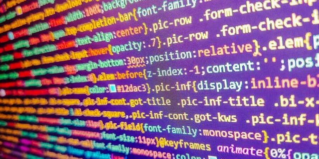

Implementación y Lógica en Godot Engine
Este proyecto consiste en la creación de un videojuego de plataformas en 2D utilizando el motor Godot Engine y programación en GDScript. El enfoque principal es lograr una jugabilidad fluida con una estética visual minimalista y moderna.
El protagonista, referido provisionalmente como "player", ha sido diseñado siguiendo un flujo de trabajo profesional. Los activos visuales se integran mediante sprite sheets en formato PNG con fondos transparentes para asegurar una integración limpia en las escenas del juego.

Actualmente, la lógica de movimiento se basa en un sistema de físicas cinemáticas, permitiendo saltos precisos y colisiones optimizadas. Se han eliminado marcas de agua y bordes en los recursos gráficos para mantener la calidad visual solicitada en el prototipo funcional.
Ver código en GDScript